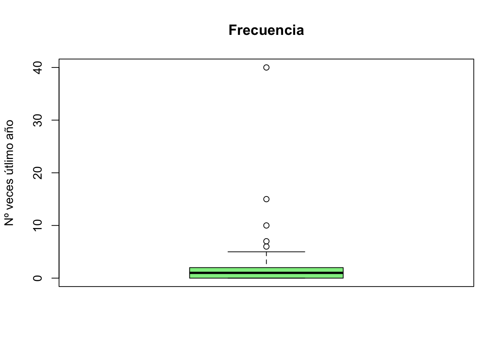
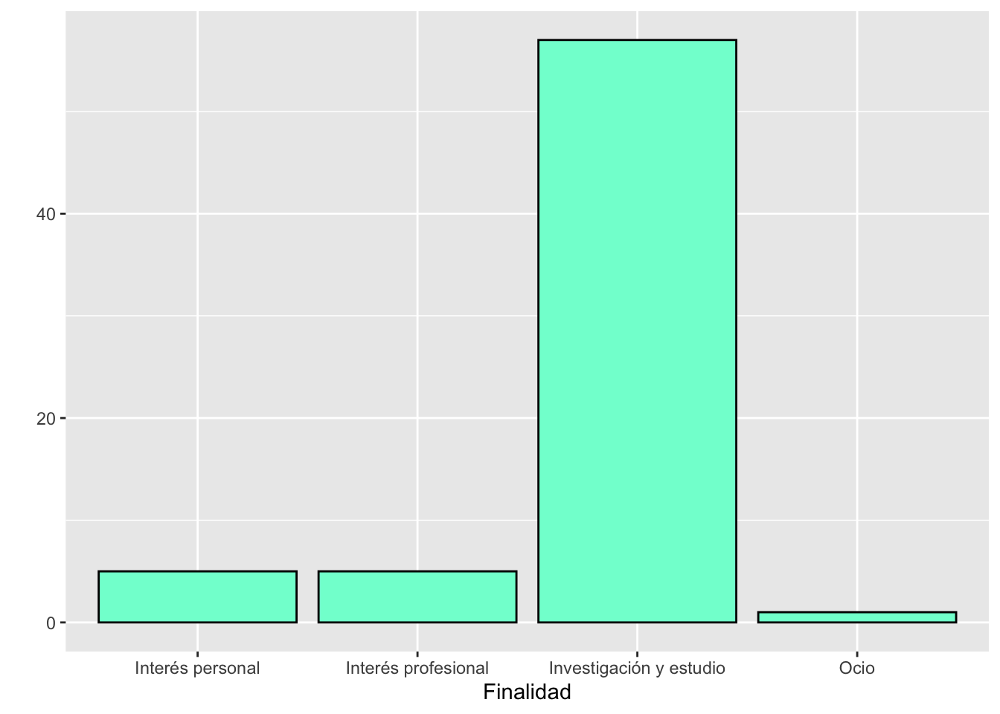
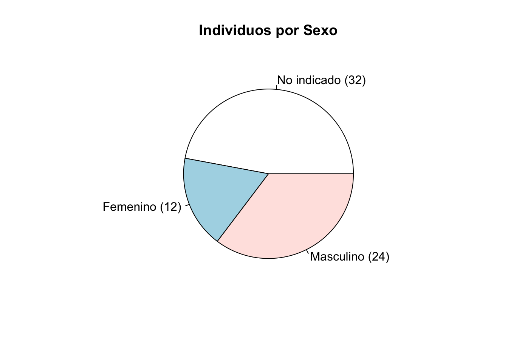
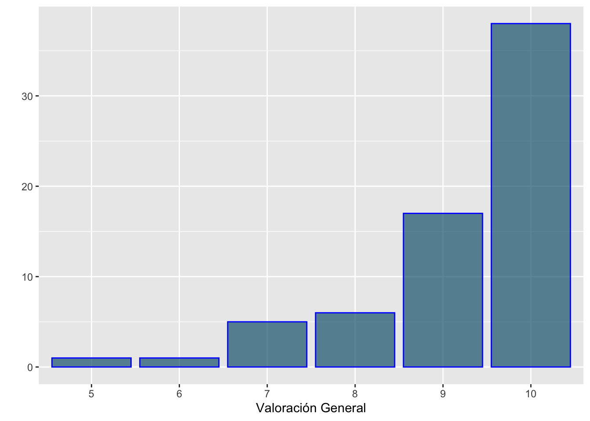
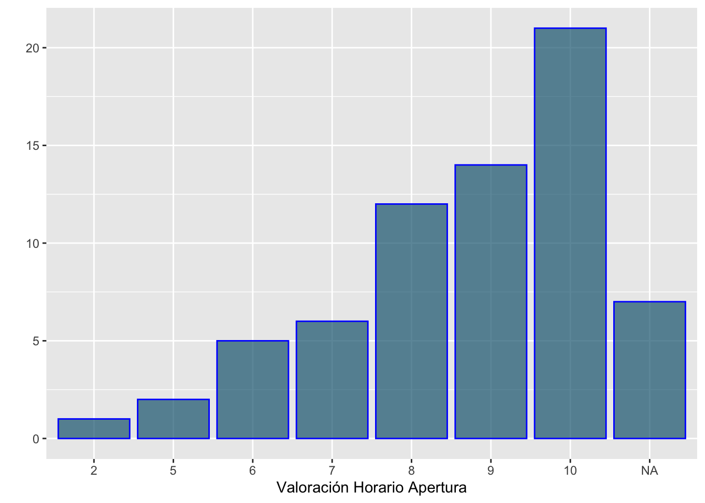
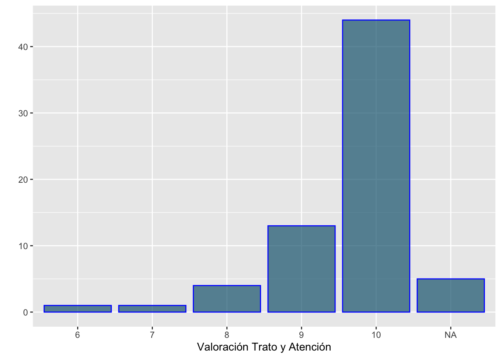
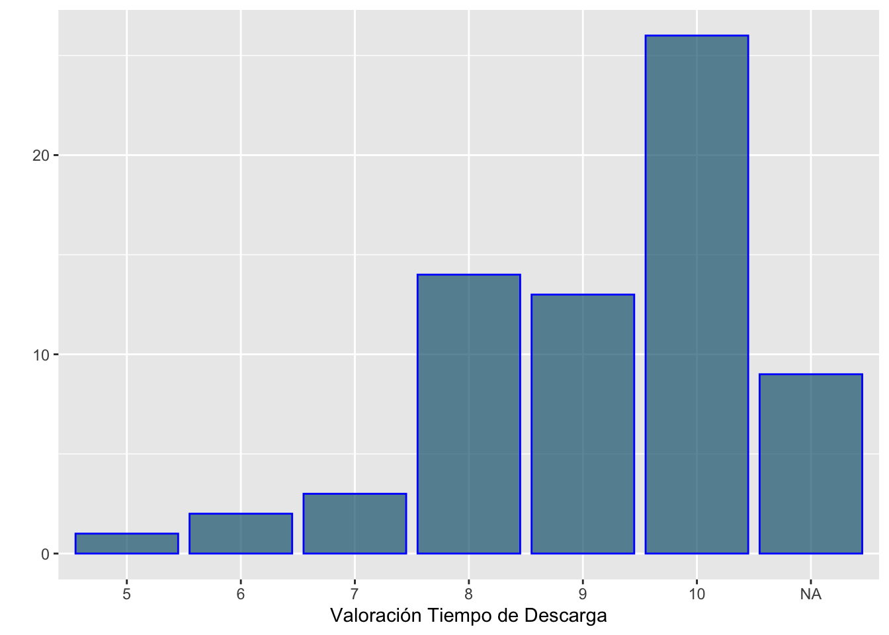
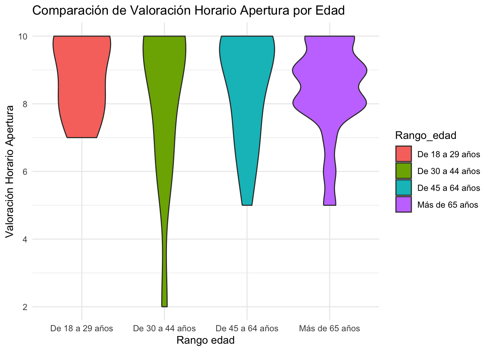
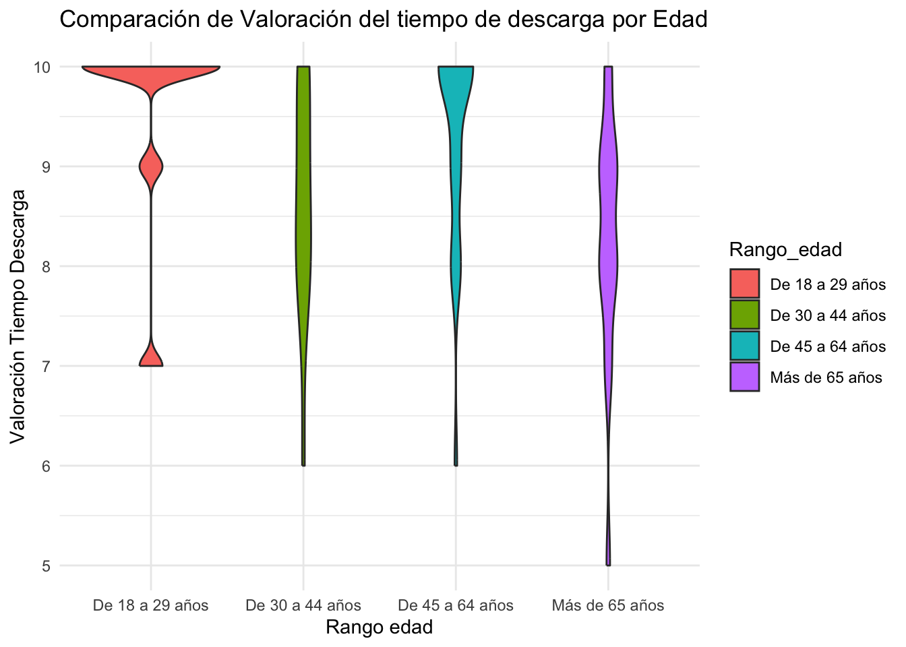

| Inicio_encuesta | Finalidad | Frecuencia | Uso_consulta_sala | Valoracion_consulta_sala | Valoracion_tiempo_espera | Uso_repografia | Valoracion_repografia | Participacion_actividades | Valoracion_actividades | Uso_reserva_doc | Valoracion_reserva_doc | Conoce_web | Valoracion_actualización_info_contenidos | Valoracion_facil_buscar_catalogo | Valoracion_facil_localizar_obras_digital | Valoracion_tiempo_descarga_doc_digital | Valoracion_edificio_instalaciones | Valoracion_horario_apertura | Valoracion_info_recibida | Valoracion_red_wifi | Valoracion_trato_atencion | Valoracion_proceso_carnes | Valoracion_adecuacion_necesidades | Valoracion_general | Sugerencias | Servivio_respecto_esperado | Rango_edad | Sexo |
|---|---|---|---|---|---|---|---|---|---|---|---|---|---|---|---|---|---|---|---|---|---|---|---|---|---|---|---|---|
| Iniciar la encuesta | Investigación y estudio | 1 | Sí | NA | 7 | No | NA | No | NA | No | NA | Sí | 7 | 5 | 4 | 6 | 6 | 6 | 8 | 7 | 8 | 6 | 6 | 6 | Gran parte del catálogo no está disponible en el catálogo web ni está digitalizado. | Igual de lo que esperaba | De 30 a 44 años | |
| Iniciar la encuesta | Investigación y estudio | 10 | No | NA | NA | Sí | 10 | No | NA | No | NA | Sí | 10 | 10 | 10 | 10 | 8 | 8 | 10 | 8 | 10 | 8 | 10 | 10 | Mejor de lo que esperaba | De 18 a 29 años | ||
| Iniciar la encuesta | Interés personal | 0 | No | NA | NA | Sí | 10 | No | NA | No | NA | Sí | 8 | 9 | 9 | 9 | NA | NA | NA | NA | NA | NA | NA | 9 | El coste de las digitalizaciones es excesivo, comparado con el de otras instituciones públicas, como la BNE, AHN o la Institución Columbina | Mejor de lo que esperaba | De 45 a 64 años | |
| Iniciar la encuesta | Investigación y estudio | 2 | Sí | NA | 9 | Sí | 10 | No | NA | No | NA | Sí | 10 | 10 | 10 | 10 | 9 | 9 | 9 | 9 | 10 | NA | 8 | 10 | Mejor de lo que esperaba | De 45 a 64 años | ||
| Iniciar la encuesta | Investigación y estudio | 2 | No | NA | NA | Sí | 10 | No | NA | No | NA | Sí | 10 | 10 | 10 | 10 | 10 | 10 | 10 | 10 | 10 | 10 | 10 | 10 | Mejor de lo que esperaba | De 30 a 44 años | ||
| Iniciar la encuesta | Investigación y estudio | 1 | No | NA | NA | Sí | 8 | No | NA | No | NA | No | NA | NA | NA | NA | NA | NA | NA | NA | NA | NA | NA | 8 | Igual de lo que esperaba | De 45 a 64 años |
ENTREGA 1 Análisis de Datos
Observamos los resultados de la Encuesta de Satisfacción de las personas usuarias de la Biblioteca Histórica Municipal de Madrid en el año 2023.
Se han recogido datos del interés, frecuencia de uso, grado de conocimiento y satisfacción de los usuarios de la Biblioteca Histórica Municipal de Madrid en relación a los servicios prestados.
Planteamos objetivos de estudio, describimos los datos, los analizamos y obtenemos conclusiones.
Objetivos
Presentamos los objetivos planteados.
- Analizar la relación entre la valoración del horario de apertura y el rango de edad.
- Analizar si existen diferencias significativas en la valoración general de la Biblioteca Histórica y sus servicios según el rango de edad.
- Analizar la relación entre la valoración del trato y atención recibidos y el sexo.
- Analizar la relación entre la valoración del tiempo de descarga de los documentos digitalizados y el rango de edad.
Descripción de los datos
Anualmente se realiza una encuesta de satisfacción a las personas usuarias de la Biblioteca Histórica para evaluar su grado de conocimiento y satisfacción en relación a los compromisos de calidad adquiridos con la ciudadanía a través de la “ Carta de Servicios de la Biblioteca Histórica Municipal, Biblioteca Musical Víctor Espinós y Hemeroteca Municipal ”. Los resultados de esta encuesta en el año 2023 se muestran en este conjunto de datos aportando tanto las preguntas como las respuestas obtenidas de forma anónima.
Contiene datos cuantitativos (frecuencia), cualitativos (interés o finalidad) y ordinales (valoraciones del 0 al 10).
Trabajaremos con la tabla de datos ordenados data_biblio. Su dimensión es de 68 filas y 29 columnas.
Hay 68 individuos registrados. Para el estudio, consideramos las siguientes variables de interés.
Frecuencia
¿Cuántas veces ha acudido en el último año a la Biblioteca Histórica?
Es un dato cuantitativo. Es una variable numérica que indica el número de veces que han acudido a la Biblioteca Histórica el último año.
table(data_biblio$Frecuencia)
0 1 2 3 4 5 6 7 10 15 40
19 29 9 4 1 1 1 1 1 1 1 median(data_biblio$Frecuencia)[1] 1Observando la dos chunks anteriores vemos que tanto la moda como la mediana es de 1 vez en el último año. Veamos en el siguiente boxplot cómo están distribuidos los datos.

Observamos, al igual que en la tabla inicial, que la mayoría de los individuos visita la Biblioteca Histórica Municipal solo una vez al año. Además, el gráfico resalta claramente la presencia de datos extremos.
Finalidad
¿Con qué finalidad se dirige habitualmente a la Biblioteca Histórica Municipal?
Es un dato cualitativo. Es un factor. Hay 4 categorías: Interés personal, Investigación y estudio, Interés profesional y Ocio.
table(data_biblio$Finalidad)
Interés personal Interés profesional Investigación y estudio
5 5 57
Ocio
1 La moda es Investigación y estudio. Representamos gráficamente con un barplot con qué finalidad se dirigen habitualmente a la Biblioteca Histórica Municipal.

Efectivamente, se puede apreciar que la investigación y el estudio predominan.
Rango edad
¿En cuál de los siguientes grupos de edad se encuentra usted?
Es un factor, variable cualitativa. Hay 4 niveles: De 18 a 29 años, De 30 a 44 años, De 45 a 64 años y Más de 65 años.
table(data_biblio$Rango_edad)
De 18 a 29 años De 30 a 44 años De 45 a 64 años Más de 65 años
8 14 26 20 La moda del rango de edad de los usuarios es el intervalo de 45 a 64 años, seguido por el grupo de mayores de 65 años. Veamos el siguiente gráfico:
Es evidente que los rangos de colores predominantes son los mencionados anteriormente.
Sexo
Por favor, indíquenos su sexo.
Es un factor con dos categorías: Femenino y Masculino. Cabe destacar que se permite no contestar. Veamos un gráfico que lo representa.

El gráfico de pastel anterior muestra la distribución de individuos según su sexo. Cada porción está etiquetada con el número de individuos y tiene un color diferente para distinguir las categorías. Además, este evidencia que gran parte de los individuos no indicaron el sexo.
Valoracion general
¿Cuál es su valoración general de la Biblioteca Histórica y sus servicios?
Es una variable cuantitativa ordinal, del 0 (muy mala) al 10 (muy buena). Veamos la distribución a partir del siguiente barplot:

table(data_biblio$Valoracion_general)
5 6 7 8 9 10
1 1 5 6 17 38 Vemos que la moda es el 10 de una manera muy destacada, con 38 apariciones.
Valoracion horario apertura
¿Cuál es su valoración del horario de apertura de la Biblioteca Histórica?
Es una variable cuantitativa ordinal, del 0 (muy mala) al 10 (muy buena).

table(data_biblio$Valoracion_horario_apertura)
2 5 6 7 8 9 10
1 2 5 6 12 14 21 Vemos que la moda vuelve a ser el 10.
Valoracion trato y atención
¿Cuál es su valoración del trato y la atención recibidos?
Es una variable cuantitativa ordinal, del 0 (muy mala) al 10 (muy buena).

table(data_biblio$Valoracion_trato_atencion)
6 7 8 9 10
1 1 4 13 44 De nuevo la moda es el 10.
Valoracion tiempo de descarga
¿Cuál es su valoración del tiempo de descarga de los documentos digitalizados?
Es una variable cuantitativa ordinal, del 0 (muy mala) al 10 (muy buena).

table(data_biblio$Valoracion_tiempo_descarga_doc_digital)
5 6 7 8 9 10
1 2 3 14 13 26 La moda es el 10.
Análisis
Valoración horario de apertura y Rango de edad
Analicemos la relación entre la valoración del horario de apertura y el rango de edad. Consideremos el siguiente gráfico de violín.

La mayoría de usuarios lo ha valorado bien. Los usuarios que han valorado negativamente el horario de apertura están en el rango de edad de 30 a 44 años.
Valoración general y Rango de edad
Pasemos ahora a analizar las respuestas sobre el nivel de satisfacción con la Biblioteca Histórica y sus servicios y veamos si existen diferencias significativas en la valoración entre diferentes edades. Para ello visualizemos el siguiente gráfico de violín.
Las personas de 18 a 29 años tienden a dar valoraciones más altas, con menos variabilidad. En cambio, los otros grupos presenta mayor dispersión, con valoraciones tanto altas como bajas, sugiriendo una percepción más diversa sobre los servicios de la Biblioteca Histórica.
Dado que observamos diferencias en las valoraciones según el rango de edad, surge la hipótesis de que el nivel de satisfacción podría estar relacionado con la edad. Para confirmar si estas diferencias son estadísticamente significativas y no solo aleatorias, es adecuado realizar un test de independencia, lo que nos permitirá determinar si existe una relación entre el rango de edad y el nivel de satisfacción.
Para ello hacemos una tabla de contingencia de las dos variables a estudiar:
tabla=table(data_biblio$Rango_edad,data_biblio$Valoracion_general)
tabla
5 6 7 8 9 10
De 18 a 29 años 0 0 0 0 2 6
De 30 a 44 años 0 1 1 0 6 6
De 45 a 64 años 0 0 2 2 3 19
Más de 65 años 1 0 2 4 6 7La funcion chisq.test aplicada a una tabla nos hace el test de independencia.
chisq.test(tabla)Warning in chisq.test(tabla): Chi-squared approximation may be incorrect
Pearson's Chi-squared test
data: tabla
X-squared = 19.606, df = 15, p-value = 0.1876Nos fijamos que nos salta un Warning, esto se debe a que hay almenos una frecuencia esperada inferior a 5. Por lo tanto, el chisq.test no es fiable. Por esta razón vamos a estimar el p-valor del test de independencia mediante simulaciones.
set.seed(NULL)
chisq.test(tabla,simulate.p.value=TRUE,B=5000)$p.value[1] 0.1709658Vamos a repetir el proceso 3 veces más:
chisq.test(tabla,simulate.p.value=TRUE,B=5000)$p.value[1] 0.1721656chisq.test(tabla,simulate.p.value=TRUE,B=5000)$p.value[1] 0.1657668chisq.test(tabla,simulate.p.value=TRUE,B=5000)$p.value[1] 0.160168Considerando la interpretación usual \(\alpha = 0.05\) el p-valor es sistemáticamente grande, lo que nos permite rechazar la hipótesis inicial de que las variables son dependientes.
Sexo y Valoración del trato y atención recibidos
Estudiemos la relación entre la valoración del trato y atención recibidos y el sexo de los individuos. Lo vemos representado en el siguiente gráfico de violín.
Todos los usuarios valoran positivamente el trato y la atención recibidos. Sin embargo, todas las mujeres lo han calificado de manera excelente, con puntuaciones entre 9 y 10. En cambio, las valoraciones entre 6 y 8 corresponden mayoritariamente a hombres. Los usuarios que no especifican su sexo, en su mayoría, también valoran bien el trato recibido.
Valoración del tiempo de descarga de documentos digitalizados y Rango de edad
Finalmente analicemos la relación entre la valoración del tiempo de descarga de los documentos digitalizados y el rango de edad mediante la siguiente representación en un gráfico de violín:

En general todos los usuarios han valorado bien el tiempo de descarga de los documentos digitalizados, pero vemos que las personas de 18 a 29 años tienen valoraciones más altas y con menos dispersión. En cambio, los otros grupos varían más, sobre todo el grupo de mayores de 65 años, sugiriendo una percepción más dividida respecto a la velocidad de descarga de los documentos digitalizados.
Conclusiones
En conclusión, las respuestas a las cuestiones planteadas y otros resultados de interés son los siguientes:
Los usuarios han acudido de mediana 1 vez a la Biblioteca Histórica Municipales en el último año.
La finalidad principal con que se dirigen habitualmente a la Biblioteca Histórica Municipales es Investigación y estudio.
La mayoría de usuarios tienen más de 45 años.
Las personas de 18 a 29 años ofrecen una valoración general más alta, mientras que los otros grupos muestran mayor dispersión; sin embargo, el test de independencia indica que las variables de rango de edad y valoración general son independientes.
La mayoría de usuarios ha valorado bien el horario de apertura. Los que lo han valorado negativamente tienen entre 30 y 44 años.
Todos los usuarios valoran bien el trato y atención recibidos.
La satisfacción con el tiempo de descarga de documentos es en general positiva, aunque las personas mayores tienden a otorgar una valoración más baja.